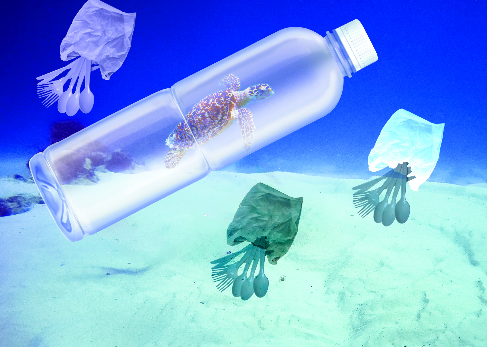
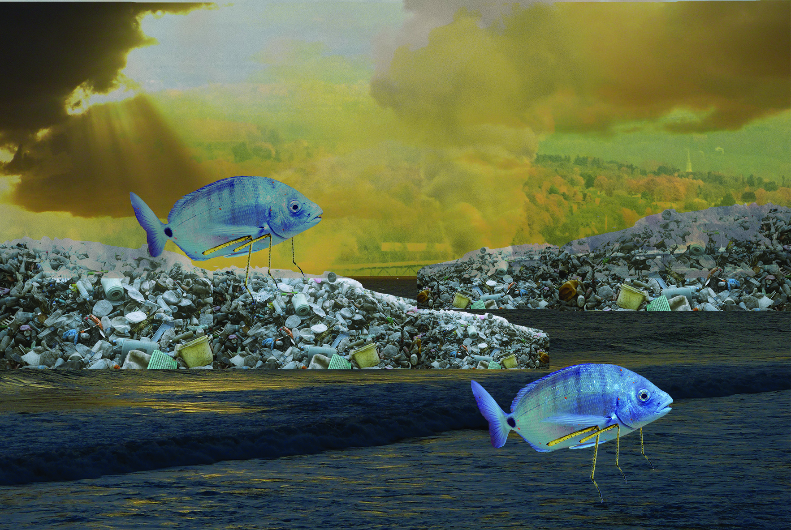

| First Photomontage | second Photomontage |
|---|---|
|
 Water Pollution Below The Sea |
 Water Pollution Above Maybe In The Future When Is Get Worse In The Sea |
The issue that I want people to bring attention to is the water pollution that can occur above and below the sea. The techniques that I use are masking to allows me to control the visibility and transparency of image parts in a non-destructive way, allow me to hide or reveal pixels without permanently deleting them, I use blending to help me controls how layers interact with each other, allowing me to creatively merge and combine colors and patterns to create unique effects, such as double exposures, vignettes, and color overlays. I use selection to help me isolate a portion of an image, which allows me to apply edits, adjustments, or effects only to that specific area without altering the rest of the image.
The blend mode I chose is Dissolve, as it helps me blend the background with the foreground without covering the object too much. Also, I have used darken because I want one of the backgrounds to mix with the other background well, which can make it look like they are part of each other in the image. Also, I have used linear dodge, multiply, and light color on one of the photomontages to make the jellyfishs have a different color look. The source of the image all comes from online in the public domain because I don’t have many photos on my phone of the ocean, so I need to look up some images. Also, public domain photos are free to use, and I will not have a copyright problem.